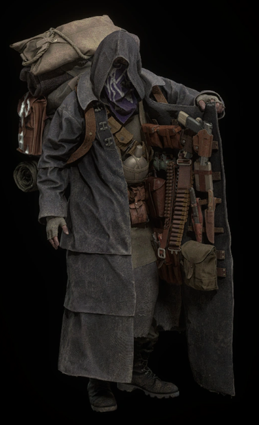

Hoy vamos a hablar de uno de los personajes de Resident Evil
Comerciante (Resident Evil)
De Wikipedia, la enciclopedia libre
El Mercader es un personaje del videojuego de terror y supervivencia de 2005 Resident Evil 4 y su remake de 2023. Actuando como un NPC que vende armas y otros artículos, ayuda a Leon S. Kennedy en su misión de rescatar a Ashley Graham del culto malvado Los Illuminados. Un hombre misterioso con ojos brillantes que lleva una gabardina negra con capucha forrada con armas y un pañuelo púrpura que oculta la mayor parte de su rostro, aparentemente se le permite pasar sin obstáculos por los enemigos del juego, los Ganados. Los críticos han llamado al Comerciante un personaje icónico en la serie, y uno de los NPC de videojuegos más reconocibles de la historia, debido a su apariencia única y líneas repetidas a menudo, incluyendo "Whaddya buyin'?" Su recepción fue en gran medida positiva, citando su ayuda amistosa frente al grave peligro. En el juego original, es interpretado por el actor de voz Paul Mercier, quien también prestó su voz a Leon, mientras que en el remake, fue interpretado por Shigeru Chiba en japonés y Michael Adamthwaite en inglés.
Concepto y diseño
El Mercader fue uno de varios personajes creados por el artista Masaki Yamanaka para el juego Resident Evil 4, en un proceso de diseño que llamó "único" debido a la falta de restricciones en el escenario o la configuración, y solo las pautas básicas a seguir. [3] [4] El Mercader, que no tiene nombre además de su título, fue creado tarde en el desarrollo de Resident Evil 4, y destinado a ser la encarnación viva de su tienda. Al hacer esto, pudieron colocar una tienda en cualquier parte del mundo del juego, independientemente de su ubicación. Su gabardina negra con capucha que contiene la mayoría de sus artículos en su interior se inspiró en la capa usada por el personaje de la serie Kinnikuman Neptuneman, un villano que adornaba su capa con máscaras robadas a los combatientes derrotados,[5] algo que sorprendió a Yamanaka cuando era niño. [6] [7] Una larga tela púrpura con detalles blancos cubre su espalda desde debajo de los ojos hasta la clavícula, y lleva una gran mochila color canela en la espalda. [8] Sus ojos brillan de manera similar a los personajes afectados por los parásitos de Las Plagas que controlan la mente que afectan a muchos de los enemigos del escenario, sin embargo, es completamente hostil, y según Resident Evil 4 Digital Archives "hará negocios con cualquiera siempre que el precio sea correcto". [9] [10] Cuando el personaje fue traído de vuelta en el remake de Resident Evil 4, recibió cambios mínimos en su diseño. [7] También existen varios conceptos no utilizados relacionados o similares al personaje, como otro comerciante en Resident Evil 5 que habría dirigido una tienda estacionaria a través de una puerta enrejada. [11] En el libro de arte de Resident Evil 6, el Mercader fue considerado como parte de un traje alternativo no utilizado para el personaje de la serie Leon Kennedy, con él en una posición sentada y atado a su espalda. Esta versión del personaje se mostró notablemente más baja, con guantes amarillos y botas con su abrigo abierto, mientras que el atuendo de Leon se parecía a su atuendo predeterminado de Resident Evil 4. El diseño finalmente se cortó debido a la cantidad de problemas técnicos que surgieron al tratar de implementarlo. [12]